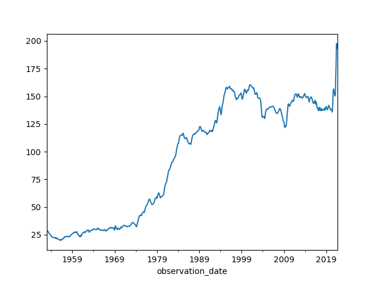

NumPy is for “Numerical Python”. It is a Python module which provides fast mathematical computation on n-dimensional data. These are arrays, matrices, 3-D data etc. Images are 2d data. Other machine learning data may be n-dimensional. For this reason NumPy is an essential part of the Machine Learning ecosystem. In conjunction with Pandas and MatPlotLib these tools will allow us to effectively use TensorFlow. This makes for a complete the Python Machine Learning Ecosystem.
We can build high speed mathematical functions and scientific computation using the underlying storage in NumPy.
To import NumPy:
import numpy as np
There is a “install” check script later in this lecture for all 3 modules.
Why not just use Python lists?
A list can be indexed and it looks to be a way to store multi-dimensional data. The problem is that a list is built out of individual nodes. Individual nodes can have different data types. This makes lists flexible but slow. With lots of data an efficient way to store homogeneous data is needed. Lots of work has been put into NumPy to make it efficient.
| NumPy Command | Example |
|---|---|
| np.array | |
| np.ones | |
| np.full | |
| np.reshape | |
On a boat with no gas working gages.
1: # 5g + 17m = 30.5
2: # 8g + 22m = 41
3:
4: # Can be solved in NumPy using
5: import numpy as np
6:
7: coeffs = np.array([[5, 17], [8, 22]])
8: depvars = np.array([30.5, 41])
9: solution = np.linalg.solve(coeffs, depvars)
10:
11: # solution
12: print ( solution )
13: # array([1, 1.5])
14: # means g=1, m=1.5 or 1 gallon per hour for generator,
15: # 1.5 gallon per hour for main moter
Vectors are one-dimensional arrays. They get used all over the place with machine learning. Depending on what we are doing we will see both row and column vectors. If we have the wrong shape we can use np.reshape to fix it.
A vector is often defined as a magnitude and a direction. In 2d space this means a vector of [3,30] can be a force of 3 and a direction of 30-degrees.
This can be useful where we can add up vectors to get a final vector.
In ML they are used to represent observations and predictions.
Let’s take a youtube set of videos on van’s and van-building and then
analyze the comments on the videos. We want to classify them as a set
of probabilities. Is it clickbait, is it useful, is it a travel video.
The Output for a given video might be a vector of [0.28,0.02,0.41] where
this is a probability of 28% for being clickbait, 2% for a probability of being
a useful build video and 41% being a travel video.
As a feature vector we may have a set of values that relate to the same videos like duration, number of views, number of comments, length of comments.
Most of the time for machine learning is spent on collecting and preparing the data. This is the ‘data’ pipeline. Consideration also needs to take place on how to test the model and how to maintain it with new data.
A sub-section of an array, called a slice, is just a pointer into the original data in NumPy. In Python it is a copy. To create a copy with NumPy use the np.copy function.
NumPy:
1: import numpy as np
2:
3: a = np.array([1,2,3,4,5])
4: print ("original a={}".format( a ))
5:
6: a[1:3] = 200
7: print ("modified a={}".format( a ))
8:
9: b = np.copy(a[1:3])
10: print ( "b={}".format(b ))
11: b[0] = 400
12:
13: print ("again a={} and b={}".format( a, b ))
Python:
1: a = [1,2,3,4,5]
2: x = a[1:3]
3: print ( "x={}".format(x))
4: x[0] = 400
5: print ( "a={} x={}".format(a,x) )
6:
7: a[1:3] = 200
First check that you have them installed.
1: import numpy as np
2: import pandas as pd
3: import matplotlib.pyplot as plt
4:
5: print ( "You should not see any errors when this is run" )
Pandas is a widely used system for storage and access of data. It is an in-memory database that allows us to combine and select data that we can then use in NumPy as vectors. The performance is very good for reasonable size data. For big data sets you usually end up using a “database” like “Postgresql”. Many of the concepts in Pandas are the same as a database and that is a good way to get the concepts for database down.
Data is organized into 2d tables that are very much like a spreadsheet. They have columns that are named and allow for you to access stuff by name. This 2d set of data is called a ‘dataframe’.
With Pandas we can do useful analysis like creating pivot tables, summarizing data from multiple columns into new columns. It also intracts with MatPlotLib to allow us to easily polot data.
To Import into Python:
>>> import pandas as pd
pd.Series takes a list and a set of names and converts this into a column that
cat be part of a data frame.
pd.DataFrame takes a dictionary of pd.Series (columns) and creates a object
that can be selected from and manipulated with a set of columns of named data.
pd.Panel creates a dictionary of dataframes. This would be like the set of
sets that you have in Microsoft Excel.
Every dataframe has named columns of data and indexes for each item.
An example:
1: import pandas as pd
2:
3: people_dict = {
4: "weight": pd.Series([145, 182, 191],index=["joan", "bob", "mike"]),
5: "birthyear": pd.Series([2002, 2000, 1999], index=["bob", "joan", "mike"], name="year"),
6: "children": pd.Series([1, 2], index=["mike", "bob"]),
7: "hobby": pd.Series(["Rock Climbing", "Scuba Diving", "Sailing"], index=["joan", "bob", "mike"]),
8: }
9:
10: people = pd.DataFrame(people_dict)
11:
12: print ( people )
13:
Output
weight birthyear children hobby
bob 182 2002 2.0 Scuba Diving
joan 145 2000 NaN Rock Climbing
mike 191 1999 1.0 Sailing
There is easy inexorability between Pandas and other tools like Comma Separated Value files (CSV), Excel, HTML and SQL Databases.
For example we have some car data.
Converted into a format that is easy for Pandas to consume.
And some code to read it and make a plot.
1: import matplotlib.pyplot as plt
2: import pandas as pd
3: # import seaborn as sns
4:
5: # df = pd.read_excel (r'car/CUSR0000SETA02.xls')
6: df = pd.read_excel (r'car/car-price-data.xls')
7: df['observation_date'] = pd.to_datetime(df['observation_date'])
8: print (df)
9: print (df.info())
10:
11: df.set_index('observation_date')['CUSR0000SETA02'].plot();
12:
13: plt.waitforbuttonpress()

Some things from the program:
| Pandas Calls | Description |
|---|---|
| head() | returns the top 5 rows in the dataframe object |
| info() | prints the summary of the dataframe |
| describe() | gives a nice overview of the main aggregated values over each column |
| tail() | returns the bottom 5 rows in the dataframe |
MatPlotLib is a 2d plotting library that is nicely integrated with Pandas. You can also use it on it’s own.
It can output to the screen, to hard-copy (images).
It is also directly integrated into Jupyter Notebook and has a way to be used on a website to produce plots.
If you are familiar with MATLAB then matplotlib.pyplot will be to your
liking. It works just like the plotting system in MATLAB.
Plotting a Line Graph:
1: import matplotlib.pyplot as plt
2:
3: plt.plot([1,3,2,4,5,8])
4: plt.ylabel('A SImple Line Graph')
5: plt.waitforbuttonpress()
6: plt.show()
Or a bar graph:
1: import matplotlib.pyplot as plt
2:
3: x = [ 21,20,23,4,7,
4: 6,78,8,3,10,
5: 41,22,53,33,
6: 31,37,39,12,
7: 45,30,100]
8: plt.hist(x, 5, facecolor='green')
9: plt.waitforbuttonpress()
10: plt.show()